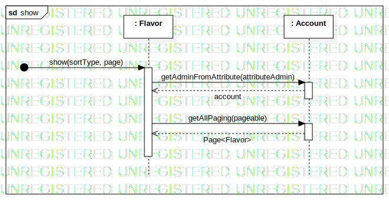

Interaction1
UMLInteraction
Untitled
::
SequenceDiagram
::
ShowFlavorList
::
Interaction1
Description
none
Diagrams

show
Participants
: Flavor
: Account
Endpoint1
Messages
show (Endpoint1→: Flavor)
getAdminFromAttribute (: Flavor→: Account)
account (: Account→: Flavor)
getAllPaging (: Flavor→: Account)
Page<Flavor> (: Account→: Flavor)
Properties
Name
Value
name
Interaction1
stereotype
null
visibility
public
isReentrant
true
Owned Elements
show